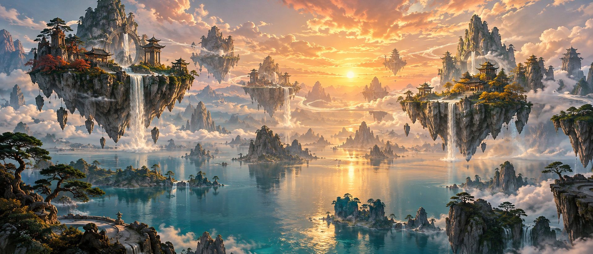
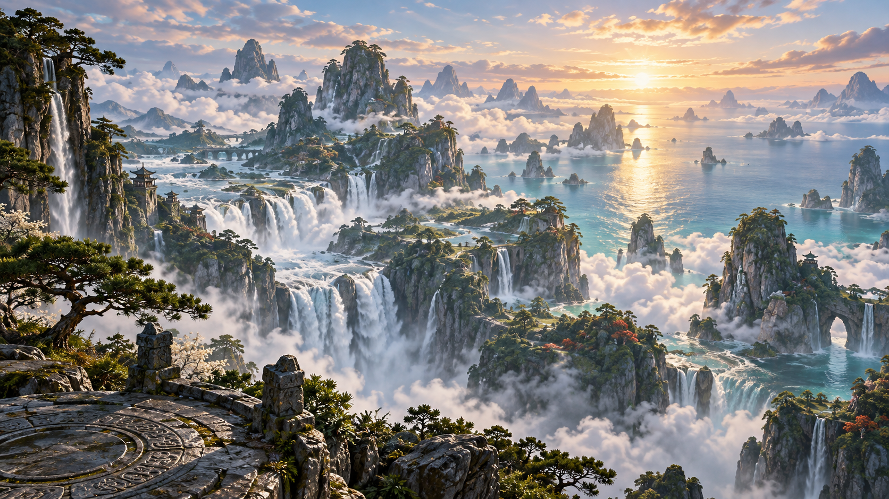
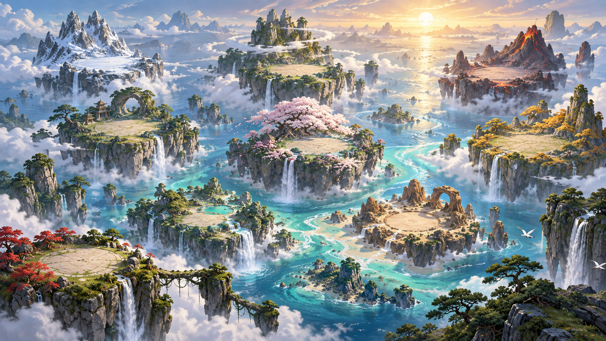
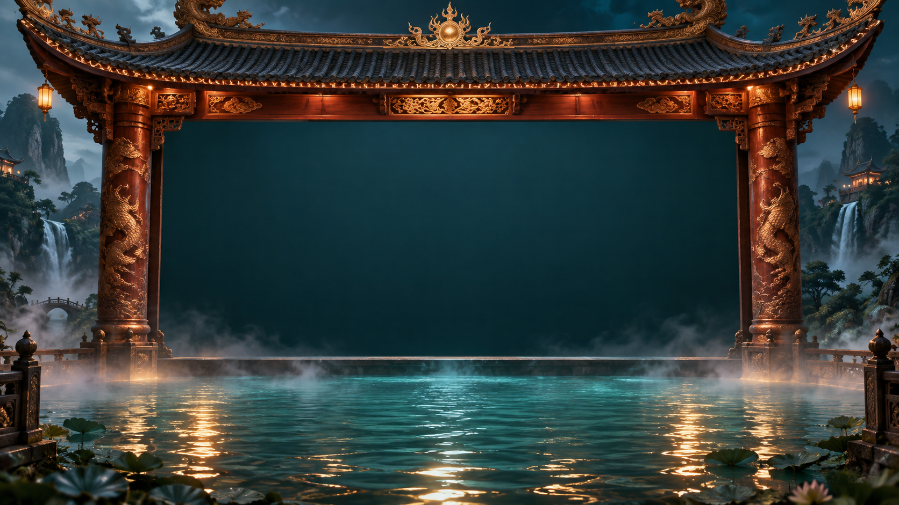
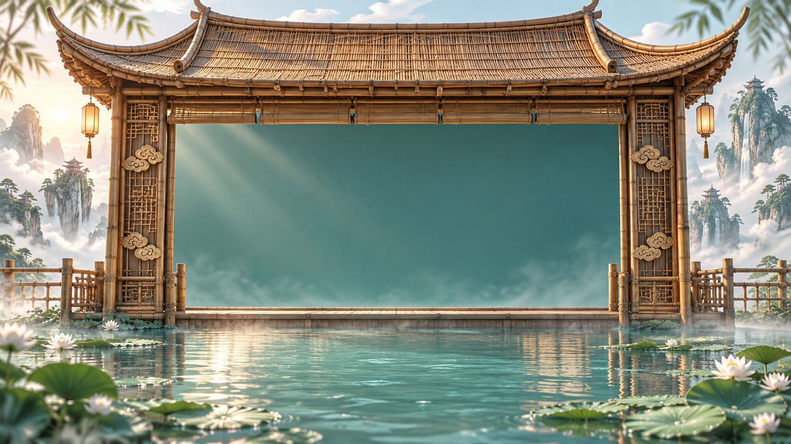
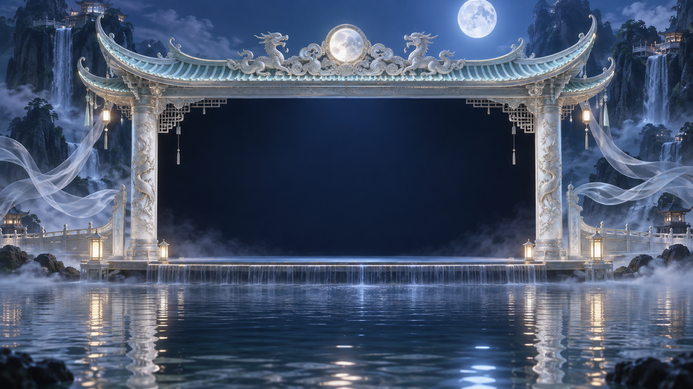
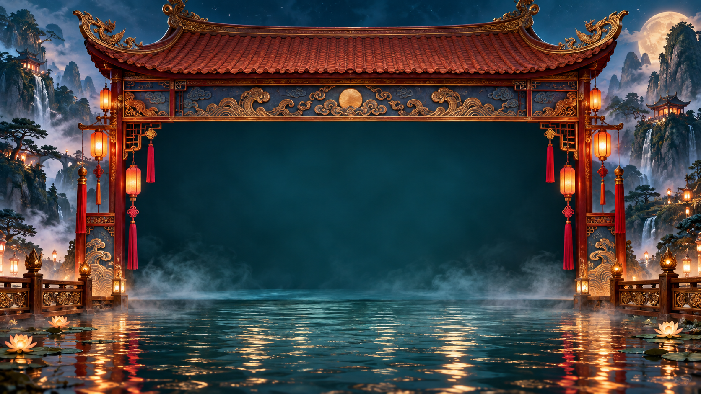
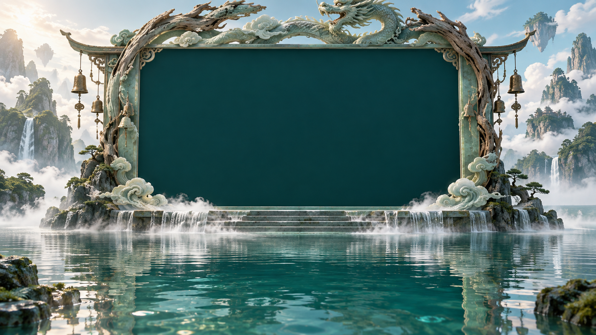

山海奇闻 · 大世界背景
九本故事书会漂浮在山海之间。画面保留水面、群山和仙岛的纵深。

落日蓬莱
浮岛、垂瀑与金色海面。气势开阔，适合戏剧化的漂浮书封。

瀑布仙海
远近山层次最强，瀑布更突出，画面偏自然史诗。

九岛水道
每座岛有自己的地貌，适合把九个故事分别安置其上。
水上戏台 · 外框
这些是外框概念原图。中央深色区域是供现有故事画面嵌入的占位区；定稿时还需要按所选方案制作可叠加的透明外框。

漆木飞檐
深红漆木、雕柱与夜水，木偶戏台感最浓。

竹编水亭
竹屋檐、荷叶和暖光，更轻巧明亮。

月白石台
月光、白石和银色倒影，仙气最强。

彩灯庙台
红瓦、灯笼与节庆色彩，夜演氛围更热闹。

玉石水门
龙形漂木和玉石拱门，山海经气息更鲜明。